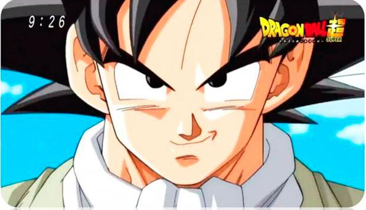

Dragon Ball (1986-1989)
Es la serie original que narra las primeras aventuras de Gokú
en la Tierra y su entrenamiento con el Maestro Roshi en Kame House.
“Dragon Ball” es la fiel adaptación del manga. Cuenta con un total de 153 episodios
Dragon Ball Z (1989-1996)
“Dragon Ball Z” es la continuación de la serie original. El episodio piloto, estrenado tan solo una semana
después del final de su predecesora, fue pensado como el final de “Dragon Ball”, y no como el inicio de una nueva etapa, pero pronto alcanzó una gran popularidad.
La serie con un total de 291 episodios
Dragon Ball GT (1996-1997)
Akira Toriyama decidió abandonar “Dragon Ball” tras la saga de Buu, pero Toei Animation pensó que aún
quedaba mucha historia de los Saiyajin por explorar. Así surgió “Dragon Ball GT”, que vio a Gokú convertido en niño de nuevo,
y trajo consigo la Fase 4 de los Súper Saiyajin. Como la serie no estuvo basada en el manga original, se considera la
continuación oficial de los dos primeros animes,
pero no forma parte del canon de la serie principal. Tiene un total de 64 episodios.
Dragon Ball Kai (2009-2011)
Como celebración por los 20 años de “Dragon Ball Z”, Toei Animation lanzó esta nueva versión de las sagas
más célebres del anime, donde se han remasterizado algunas de las secuencias con intención de que se pareciese todo lo posible
al manga. Tiene un total de 167 capítulos.
Dragon Ball Kai: The Final Chapters (2014-2015)
“The Final Chapters” se lanzó como una conclusión a la remasterización de “Dragon Ball Kai”. Sin embargo,
el despido de Kenji Yamamoto supuso un descenso considerable de la calidad. La serie engloba la saga de Buu y cuenta con un
total de 61 episodios en Japón, divididos en 69 en su lanzamiento en DVD.
Dragon Ball Super (2015-2018)
Cuando se estrenó la serie, los fans criticaron mucho la calidad de su animación; sin embargo,
“Dragon Ball Super” se acabó convirtiendo en una digna sucesora de “Dragon Ball Z”. Comenzado por la saga de Black Gokú,
la serie canónica se extiende hasta el Torneo de Poder, donde quedó zanjada hasta el estreno de la película “Dragon Ball Super:
Broly”. La serie cuenta con 131 episodios y los eventos comienzan ocho meses después del final de la saga Buu.

Super Dragon Ball Heroes (2018-Actualidad)
Es una antología de capítulos de 6 minutos que sirven como material promocional de la franquicia de
videojuegos de “Dragon Ball” en Japón. La serie presenta, libremente, nuevas evoluciones y fusiones de los personajes
icónicos. Además, queda fuera del canon oficial del anime.